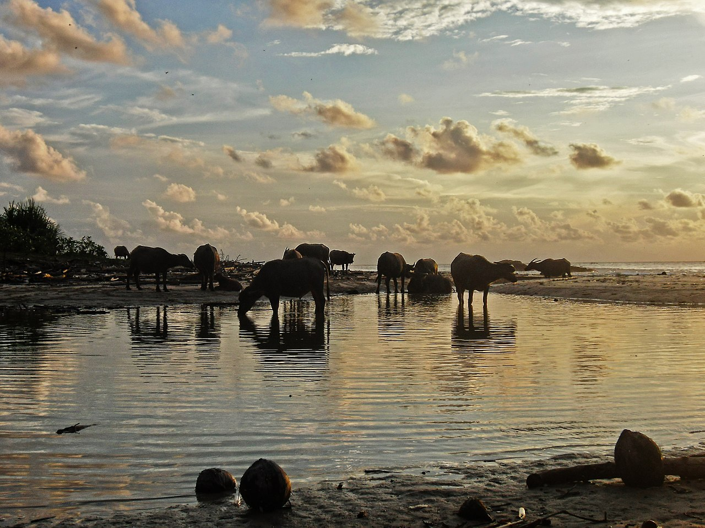

3000++ foto keindahan alam Indonesia oleh peserta kompetisi Wiki Cinta Alam Indonesia 2017!

Wiki Cinta Alam Indonesia (WCAI) 2017 adalah kompetisi fotografi bentang alam Indonesia, baik flora maupun fauna, yang diadakan di Indonesia secara daring selama 30 hari pada bulan Juni 2017. Kompetisi ini merupakan versi lokal dari Wiki Loves Earth, perlombaan foto bentang alam yang diadakan setiap tahun oleh Wikimedia Foundation. Foto pemenang utama dari kompetisi WCAI 2017 akan diikutsertakan dalam kompetisi Wiki Loves Earth International pada bulan Juli 2017. Salah satu tujuan diadakannya lomba ini adalah untuk menambah sekaligus menjaring koleksi foto bentang alam berlisensi bebas di Wikimedia Commons.
Arti dari berlisensi bebas adalah foto-foto tersebut dapat digunakan oleh siapapun untuk kepentingan apapun (termasuk kepentingan komersial) tanpa harus mengurus izin langsung dari pencipta. Penjelasan terkait cara kerja lisensi bebas di Wikimedia Commons selengkapnya dapat Anda baca di artikel ini.
Proses pengumpulan foto pada perlombaan WCAI 2017 telah ditutup pada tanggal 30 Juni 2017 lalu. Hingga batas waktu yang ditentutkan terhitung ada 3.140 berkas foto bentang alam Indonesia yang diunggah ke Wikimedia Commons. Jumlah tersebut terang saja merupakan kabar baik bagi ekosistem pengetahuan bebas di Indonesia. Karena, artinya terdapat 3.000 lebih berkas foto bentang alam berkualitas yang dapat digunakan kembali secara bebas.
Berikut adalah contoh-contoh karya yang diunggah oleh para peserta kompetisi WCAI 2017:
{kind=link}

{kind=link}
{kind=link}
{kind=link}

{kind=link}
Koleksi foto unggahan peserta kompetisi WCAI 2017 dapat Anda lihat di tautan berikut ini.
Bebaskan pengetahuan!
Tags:
Oleh: Creative Commons Indonesia
10 Jul 2017Kategori:
Berita Terbaru
- Lokakarya Hak Cipta dan Lisensi Creative Commons di Pekanbaru
- Pengumuman Resmi: Hasil Akhir Training of Trainers Creative Commons Indonesia
- Literatur tentang Model Bisnis Terbuka "Made With CC"
- Data dan Artikel Ilmiah Terbuka dari PLOS!
- Konten Format Model 3 Dimensi Berilsensi CC di Platform Sketchfab